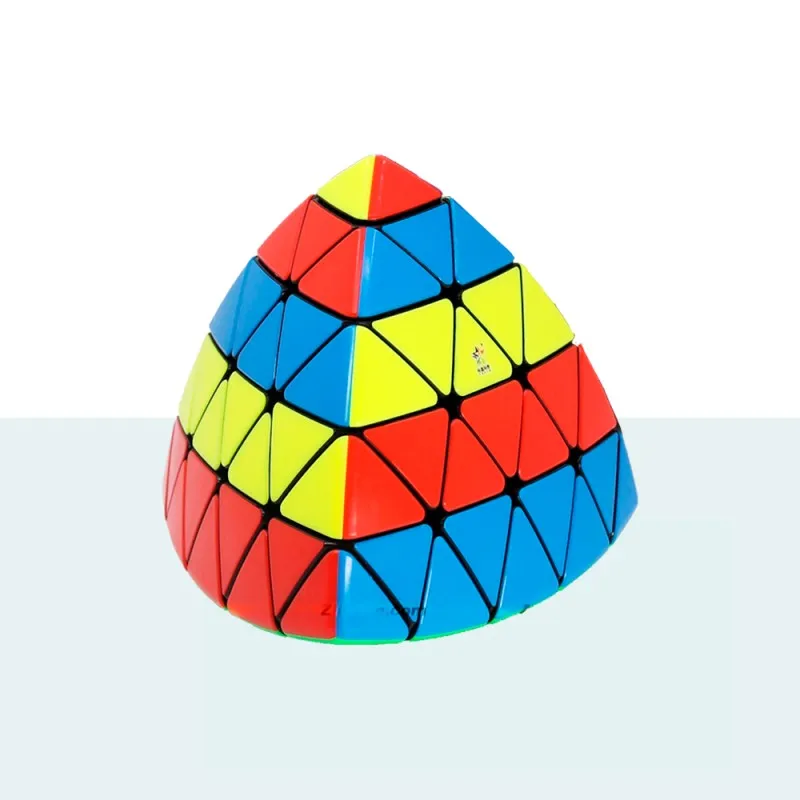

Pyraminx
El Pyraminx es un rompecabezas en forma de pirámide que se ha vuelto muy popular entre los amantes de los juegos de ingenio. Este cubo mágico de cuatro lados tiene una estructura única que lo hace un desafío fascinante para los entusiastas de los puzzles.
El Pyraminx consta de cuatro piezas centrales, seis aristas y cuatro esquinas, todas unidas por pivotes que permiten el giro de las caras. El objetivo del juego es girar y mover las piezas hasta que cada cara tenga un solo color.
A diferencia del Cubo de Rubik, el Pyraminx es más fácil de resolver ya que solo tiene una capa y no se puede desmontar. Sin embargo, esto no significa que sea menos desafiante. En realidad, el Pyraminx requiere de mucha estrategia, paciencia y habilidad para ser resuelto de manera eficiente.
Existen varias técnicas para resolver el Pyraminx, como la técnica de capa por capa, la técnica de solución avanzada y la técnica de reducción. Cada una de estas técnicas tiene sus ventajas y desventajas, y la elección depende de la habilidad y experiencia del jugador.
El Pyraminx ha ganado popularidad debido a su diseño único y a la diversión que proporciona al resolverlo. Además, existe una gran variedad de variantes y modelos del Pyraminx, como el Pyraminx Crystal o el Pyraminx Duo, que añaden una capa adicional de complejidad al juego.
En resumen, el Pyraminx es un rompecabezas emocionante y desafiante que puede ser resuelto por cualquier persona dispuesta a poner en práctica su habilidad y estrategia. Es un juego que proporciona horas de entretenimiento y es una excelente manera de ejercitar el cerebro y mejorar la concentración y la resolución de problemas.